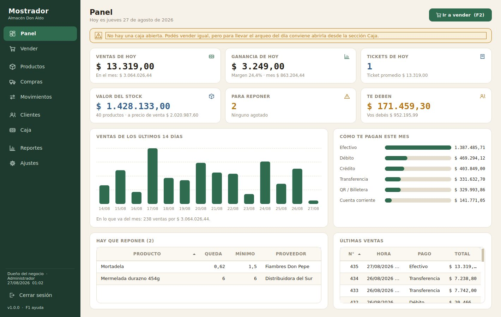
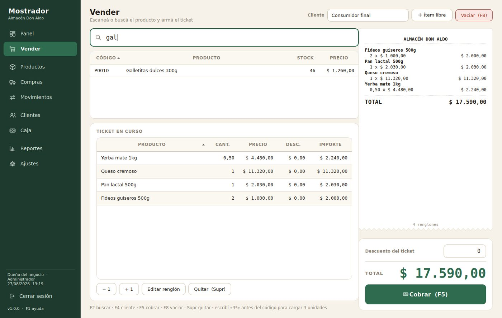
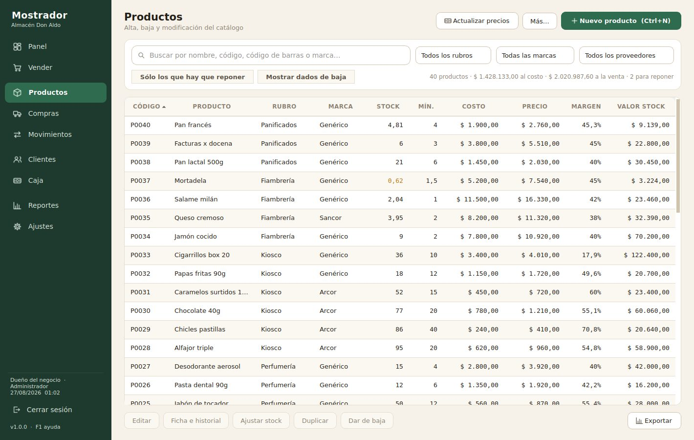
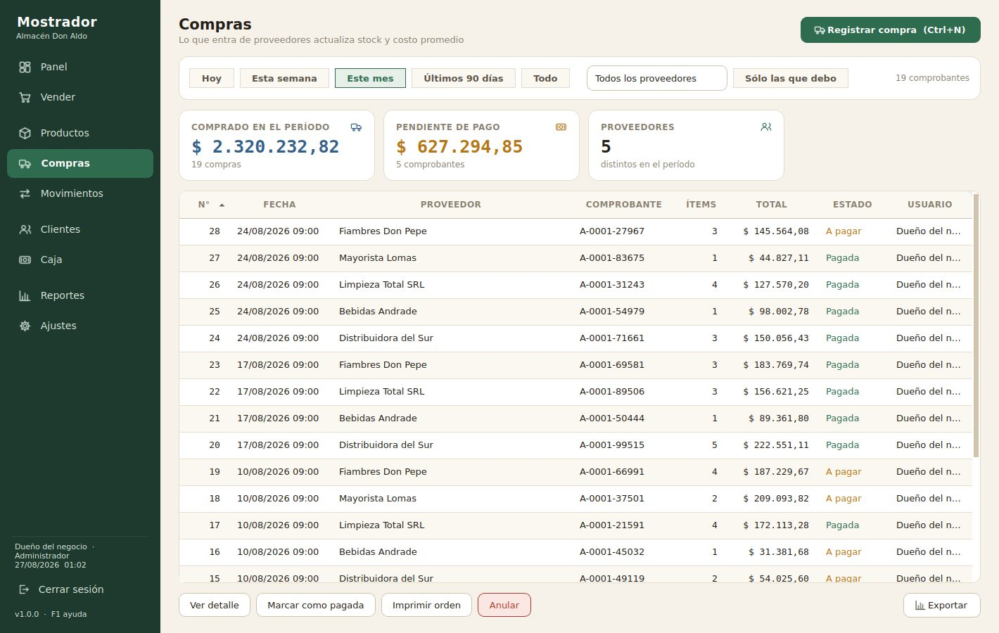
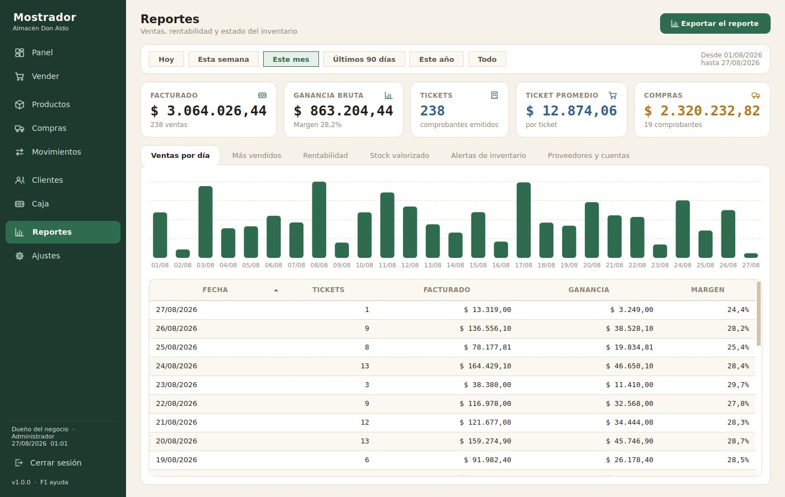
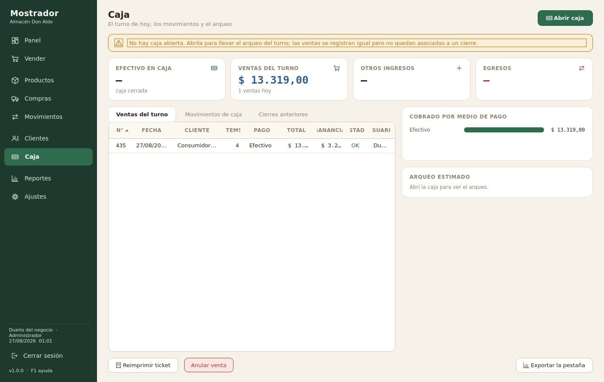
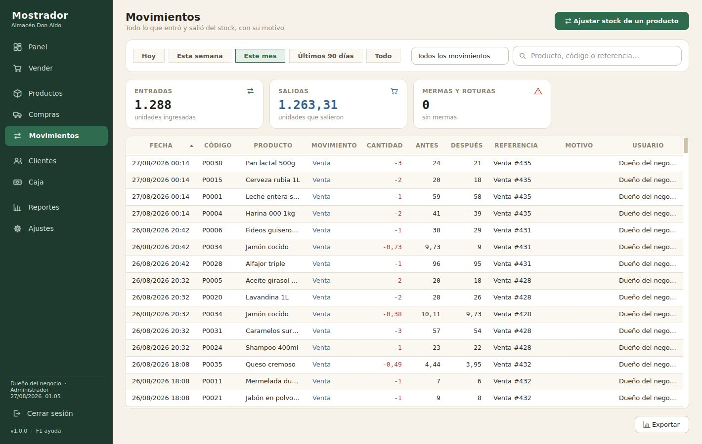
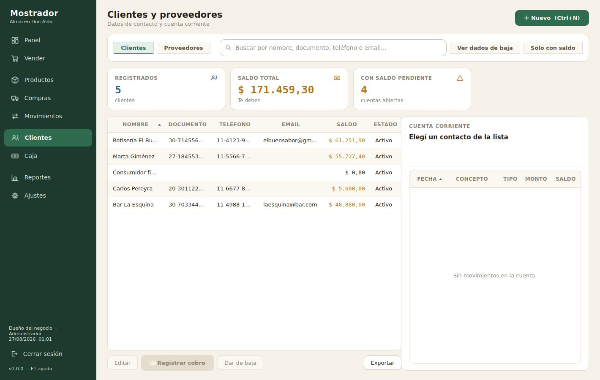
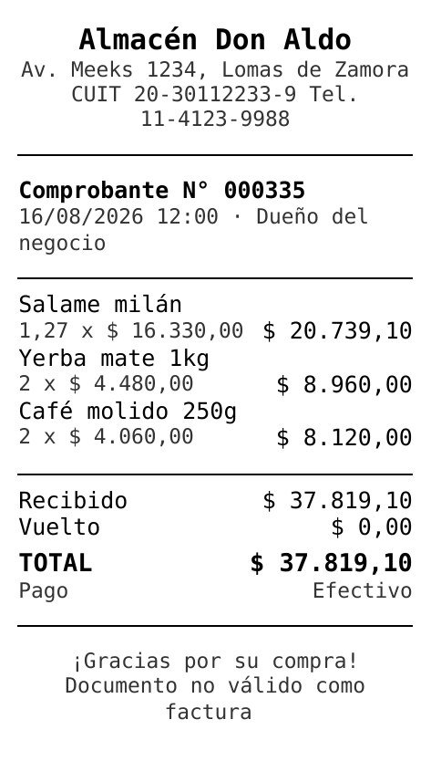
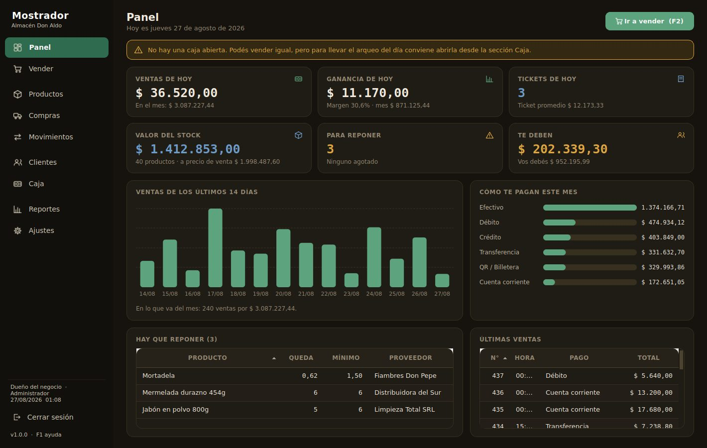

Punto de venta rápido
Pasás el lector y listo. Buscá por nombre o código, cargá varias unidades con
3* antes del código, aplicá descuentos y cobrá con F5. El vuelto se calcula solo
y el ticket sale por la ticketera de 58 u 80 mm.
Pago único · Sin abono mensual · Funciona sin internet
Mostrador es un programa para tu computadora que lleva el stock, las ventas, las compras y la caja de tu comercio. Se instala en cinco minutos, funciona aunque se corte internet y los datos quedan en tu máquina, no en la nube de otro.
15 días de prueba · No pide tarjeta · Un solo programa: se activa con una clave

Mostrador resuelve las seis. No es un ERP que tenés que aprender durante un mes: es un mostrador digital que tu empleado entiende el primer día.
Qué hace
Nueve secciones que cubren el día completo del negocio, desde que abrís hasta que cerrás la caja.
Pasás el lector y listo. Buscá por nombre o código, cargá varias unidades con
3* antes del código, aplicá descuentos y cobrá con F5. El vuelto se calcula solo
y el ticket sale por la ticketera de 58 u 80 mm.
Cada venta baja el stock, cada compra lo sube. Alertas de mínimo, control de vencimientos, ubicación en góndola y venta por kilo o por unidad. Nunca más ir al depósito a contar.
Cargás lo que trajo el proveedor y el costo se recalcula como promedio ponderado — el número real, no el de la última factura. Si querés, los precios de venta se reajustan solos manteniendo tu margen.
Llegó la lista nueva y subió todo un 12%. Elegís el rubro, la marca o el proveedor, ponés el porcentaje, redondeás a múltiplos de 10 y ves la previsualización antes de confirmar. Dos minutos en vez de dos horas.
Abrís con el fondo inicial, registrás ingresos y retiros, y al cerrar el programa te dice cuánto debería haber en el cajón y cuánto contaste. La diferencia queda anotada con nombre y hora.
Qué se vende, qué te deja plata y qué está durmiendo en la góndola desde hace dos meses. Rentabilidad por producto y por rubro, stock valorizado a costo y a venta, productos por vencer. Todo se exporta a Excel.
Cuenta corriente de clientes y proveedores con límite de crédito. Sabés quién te debe, cuánto y desde cuándo, y cuánto le debés vos a cada distribuidor. Cobros y pagos con su historial completo.
El kardex completo: cada entrada y salida, con el stock antes y después, el motivo y quién la hizo. Mermas, roturas, devoluciones y ajustes quedan justificados. Se acabó el «no sé dónde fueron a parar».
El vendedor vende, consulta y maneja la caja. Los precios, las compras y los reportes los ve sólo el dueño. Cada acción queda registrada con nombre y hora en el historial de actividad.
Cómo se ve
Ninguna es un render. Es exactamente lo que vas a ver al instalarlo.

El ticket en curso se dibuja como una tira de papel térmico, con los números en tipografía monoespaciada para que las columnas queden alineadas. Todo se maneja con el teclado: F2 buscar, F4 cliente, F5 cobrar, F8 vaciar.

Costo, precio y margen enlazados: tocás uno y los otros se acomodan. Filtros por rubro, marca y proveedor, y selección múltiple para dar de baja o actualizar precios en lote. Los que hay que reponer se marcan en color.

Cada remito que entra actualiza el stock y el costo promedio. Las que quedaron impagas se marcan y suman a la cuenta del proveedor, así siempre sabés cuánto debés y a quién.

Ventas por día, más vendidos, rentabilidad por producto o rubro, medios de pago, stock valorizado, productos por vencer y mercadería sin movimiento. Elegís el período y exportás a Excel.

Apertura con fondo inicial, ingresos y egresos del turno, y el arqueo en vivo: cuánto debería haber en el cajón ahora mismo. Al cerrar queda el registro con la diferencia entre el sistema y lo que contaste.

Cada unidad que entró y salió, con el stock antes y después. Si falta mercadería, acá está la respuesta: quién la tocó, cuándo y por qué.

La libreta del fiado, ordenada. Saldo por cliente, límite de crédito, y el detalle de cada compra y cada pago con fecha.

Sale por cualquier ticketera térmica de 58 u 80 mm, o en A4 si todavía no tenés una. Con el nombre, el CUIT y la dirección de tu negocio. Si no hay impresora conectada, lo guarda en PDF.

La misma pantalla, en oscuro, para los que cierran a las dos de la mañana. Se cambia desde Ajustes con un clic.
Para quién es
Si vendés mercadería en un mostrador, Mostrador es para vos.
Cientos de códigos, proveedores distintos y aumentos cada dos semanas. El aumento masivo por proveedor te devuelve la tarde.
Muchas ventas chicas y rápidas. El lector de códigos y el cobro con F5 hacen que la cola no se arme.
Venta por kilo con decimales, control de vencimientos y alertas de mermas para lo que se pone feo.
Miles de artículos con proveedor habitual y ubicación en góndola. Buscar por nombre encuentra el bulón que nadie recuerda dónde está.
Márgenes distintos por rubro y mucha mercadería inmovilizada. El reporte de rentabilidad te muestra qué conviene reponer.
Precio por kilo, vencimientos cortos y proveedores que cambian de precio todas las semanas.
Cuenta corriente de clientes con límite de crédito, y control de lo que le debés a cada fábrica.
Si sólo necesitás saber qué entró, qué salió y qué queda, con el kardex y los ajustes te alcanza.
Por qué Mostrador
| Cuaderno o Excel | Sistema en la nube | Mostrador | |
|---|---|---|---|
| Qué pagás | Nada | Abono todos los meses, para siempre | Una sola vez |
| Si se corta internet | Seguís | No podés vender | Seguís vendiendo |
| Dónde están tus datos | En tu PC | En un servidor de otro país | En tu PC, en un archivo que copiás |
| Stock actualizado | Si te acordás de anotarlo | Sí | Solo, con cada venta |
| Costo promedio real | No | A veces | Sí, ponderado |
| Aumentar precios en lote | Uno por uno | Según el plan | Por rubro, marca o proveedor |
| Si dejás de pagar | — | Perdés el acceso a tus datos | Sigue funcionando igual |
| Cómo se activa | — | Usuario y contraseña, siempre en línea | Una clave que se pega una vez |
| Cuánto tarda en andar | — | Implementación y capacitación | Cinco minutos |
Precios
Sin abono, sin renovación, sin sorpresas. La licencia no vence nunca.
Para un negocio, una computadora.
$60.000 pago único
El que más eligen
Para el que tiene caja y oficina, o dos locales.
$110.000 pago único
Si necesitás algo que hoy no está.
A convenir
La prueba de 15 días es gratis y completa. Y si comprás y en los primeros 30 días ves que no es para vos, te devuelvo el dinero sin preguntas. El riesgo lo corro yo, no vos.
Precios en pesos argentinos, IVA incluido. Se factura al concretar la compra.
Prueba gratuita
Es el programa completo, no un video ni una demo guiada. Trae un negocio de ejemplo cargado para que puedas recorrerlo sin tipear nada, y con un clic lo dejás vacío para empezar con tu propia mercadería.
Windows 10 y 11 · 38 MB · No requiere instalar nada más
La actualización masiva de precios y la importación desde planilla se habilitan al activar.
No hay dos descargas. Cuando comprás te mandamos una clave, la pegás en Ajustes y el mismo programa que venías usando se desbloquea al instante.
Tu base de datos no se toca: seguís con tus productos, tus clientes y tu historial. No hay que reinstalar ni cargar nada de nuevo.
Nos pasás el código de tu computadora, que el programa te muestra en Ajustes.
Te mandamos la clave por WhatsApp, el mismo día del pago.
La pegás y listo. Treinta segundos, sin desinstalar nada.
Puesta en marcha
Un solo archivo. No pide instalar Java, ni .NET, ni base de datos, ni configurar nada en el router. Doble clic y está andando.
A mano, o de una vez desde tu planilla de Excel si ya la tenés armada. Podés arrancar con los veinte productos que más vendés y sumar el resto sobre la marcha.
Abrís la caja, pasás el lector y cobrás. El stock se descuenta solo y a la noche cerrás el turno con el arqueo. Eso es todo.
Buzón de sugerencias
Mostrador no lo hizo un comité: lo hice mirando cómo trabaja gente que atiende un mostrador todos los días. Si algo te falta, te sobra o te resulta incómodo, quiero saberlo.
Leo todo lo que llega. Las sugerencias que se repiten entran en la próxima versión, y si sos cliente te aviso cuando la función que pediste está lista.
Preguntas
No, y prefiero decírtelo antes de que pagues. Mostrador emite comprobantes internos: el ticket que le das al cliente y tu control de caja. Si necesitás factura A o B electrónica, tenés que seguir usando el portal de ARCA o el sistema de tu contador. La integración con ARCA está en la lista de lo que viene, y si es indispensable para vos, escribime y te aviso apenas esté.
Sí, siempre. El programa y los datos están en tu computadora. Internet sólo hace falta para descargarlo la primera vez. Si se corta la conexión en el barrio, vos seguís vendiendo como si nada.
Toda la información vive en un solo archivo. El programa hace una copia automática cada vez que lo cerrás, y podés forzar una con Ctrl+B. Copiás ese archivo a un pendrive o a Drive y estás cubierto: en la máquina nueva, instalás Mostrador, pegás el archivo y está todo como lo dejaste.
No, pero ayuda. Sin lector buscás por nombre o por código interno y funciona igual. Si querés comprar uno, cualquier lector USB común anda: la computadora los ve como un teclado y no hay que configurar nada.
Sí. Cada producto se define por unidad o por kilo, y las cantidades aceptan decimales (0,350 kg de jamón, por ejemplo). Todavía no lee la balanza directamente: el peso lo escribís vos.
La licencia Negocio cubre tres máquinas, pero cada una lleva su propia base de datos: hoy no sincronizan entre sí en tiempo real. Si necesitás dos cajas trabajando sobre el mismo stock al mismo tiempo, escribime y lo vemos, porque es la función que más me están pidiendo.
Una tarde. La pantalla de vender es la única que necesita para trabajar, y son tres teclas. Los precios, las compras y los reportes se los reservás vos con el usuario de administrador.
Las actualizaciones de la línea 1.x son gratis para siempre. Si algún día hay una versión 2 con cambios grandes, vas a tener un precio de actualización preferencial, y tu versión 1 va a seguir funcionando aunque no la actualices. Nunca voy a apagarte el programa que ya pagaste.
No hay que descargar nada de nuevo. Es el mismo programa: abrís Ajustes → Licencia, ahí te muestra el código de tu computadora, nos lo pasás y te mandamos la clave. La pegás, tocás Activar y en el acto se levantan todos los topes. Tus productos, tus ventas y tu historial quedan exactamente donde estaban.
No: cada clave se genera para una máquina en particular, a partir de su hardware. Por eso el plan de tres equipos son tres claves, una por computadora. Si intentás usar la de una máquina en otra, el programa te lo avisa y te sigue funcionando en modo prueba.
Si cambiás un disco o una placa de red, la licencia sigue andando: el programa tolera que cambie una parte del equipo. Si cambiás la máquina entera, liberás la licencia desde Ajustes en la vieja, nos pedís la clave nueva y te la mandamos sin cargo. No hay límite de reinstalaciones ni contadores que se agoten.
No. La activación es un ida y vuelta entre vos y yo por WhatsApp: el programa nunca se conecta a ningún servidor. Podés activarlo en una computadora que jamás vio internet.
Transferencia bancaria o Mercado Pago. Escribime por el formulario o por WhatsApp, te paso los datos y la factura, y en el mismo día te mando el instalador de la versión completa.
Contacto
Del otro lado no hay un centro de atención: contesto yo. Si me contás qué vendés y cómo trabajás hoy, te digo derecho si Mostrador te sirve o si te conviene otra cosa.
Quince días gratis, sin tarjeta y sin compromiso. Si no te sirve, borrás el archivo y listo.